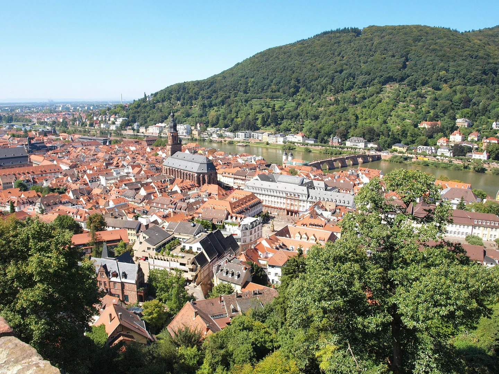
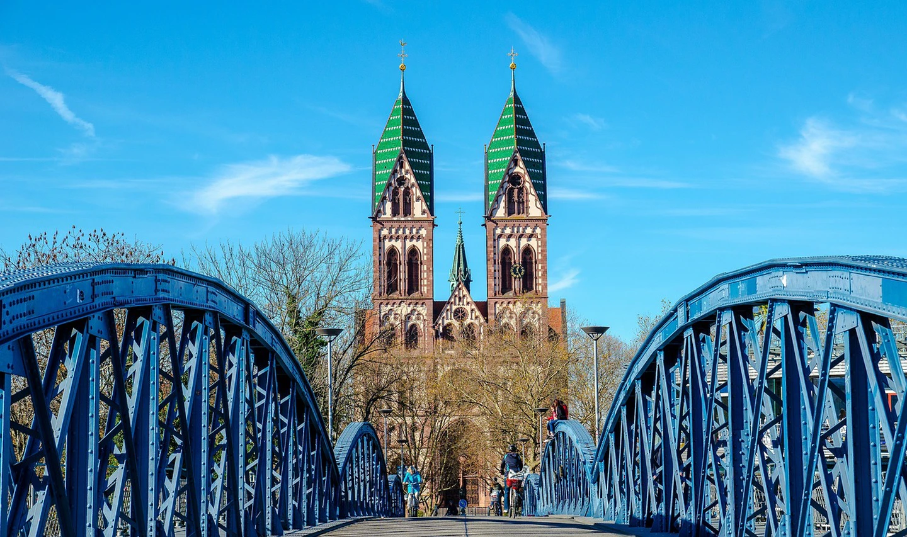
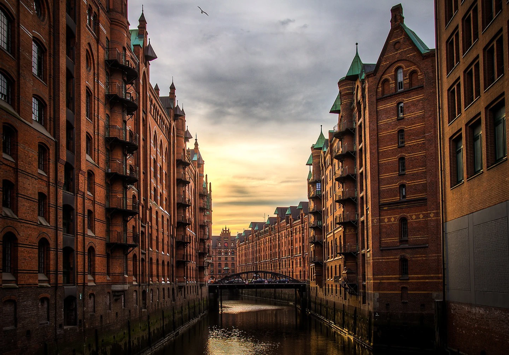
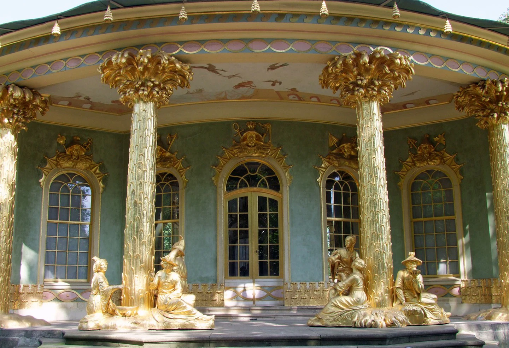
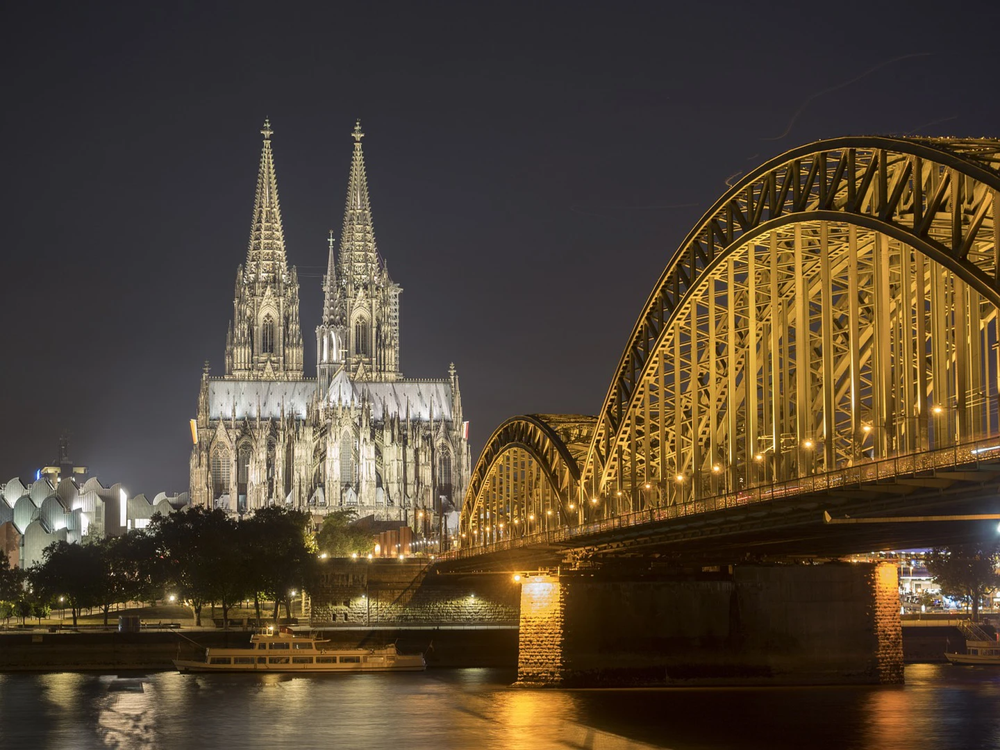
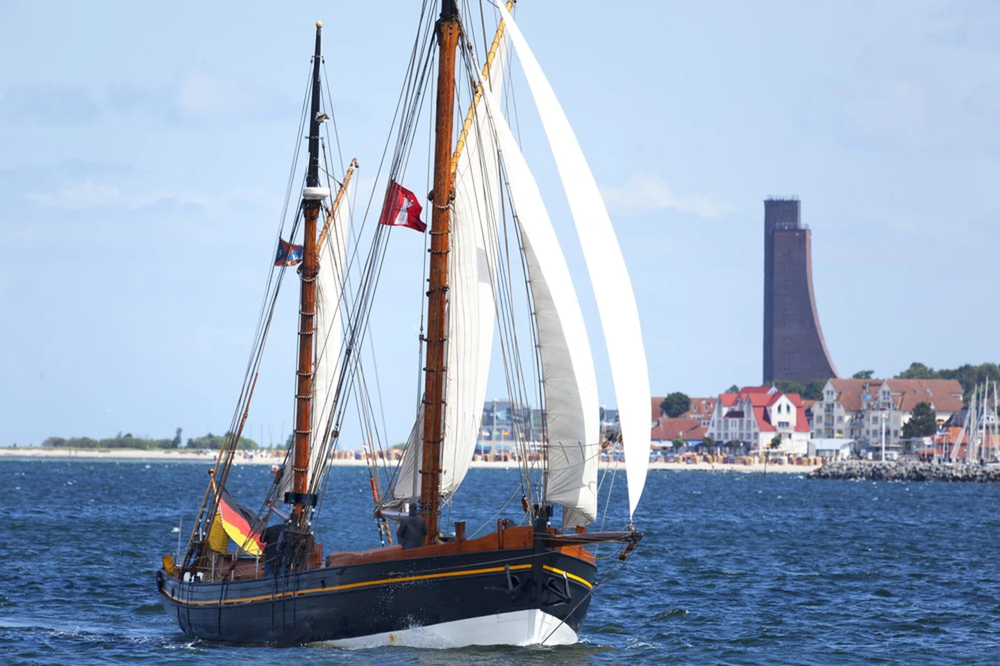
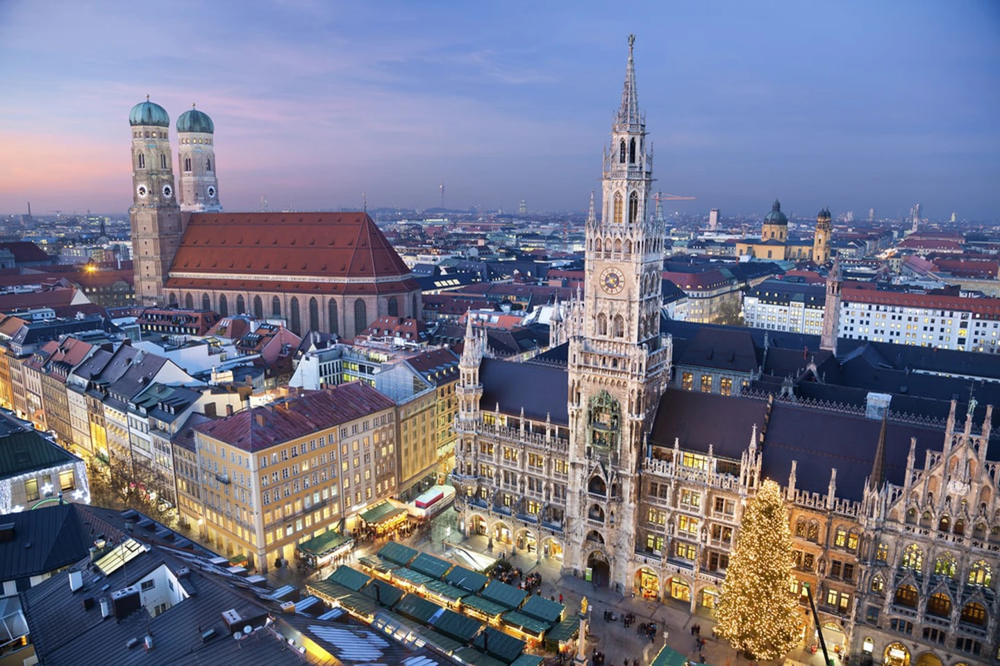
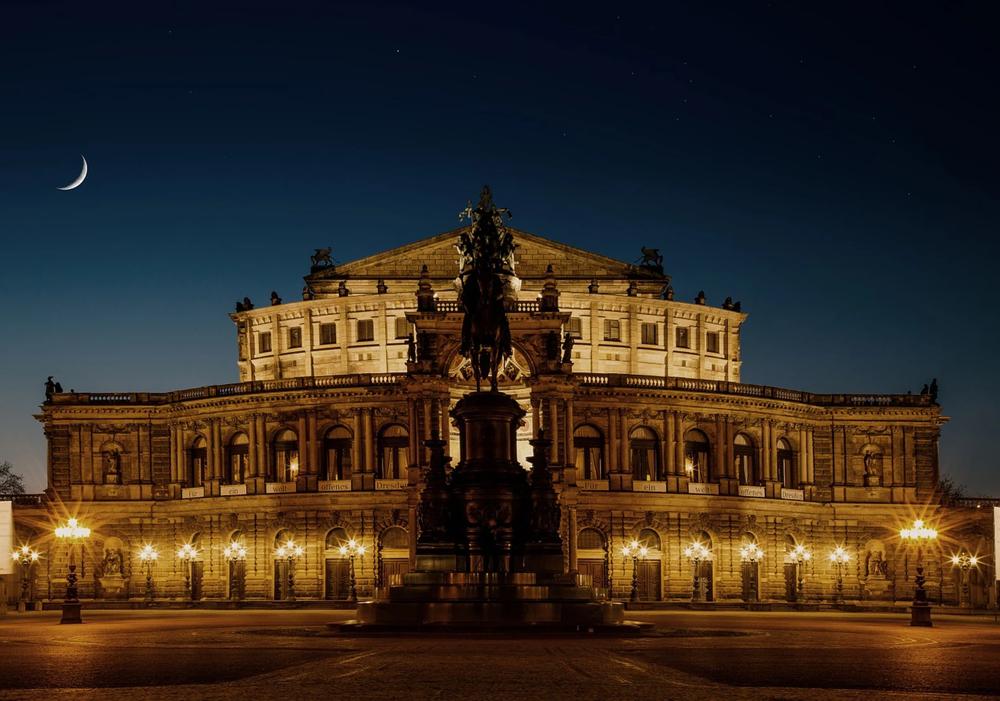
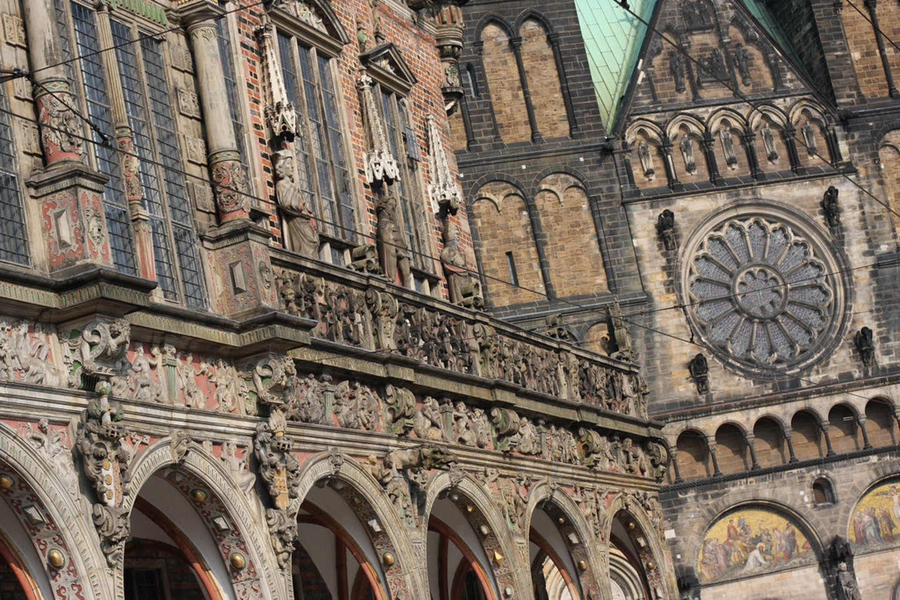
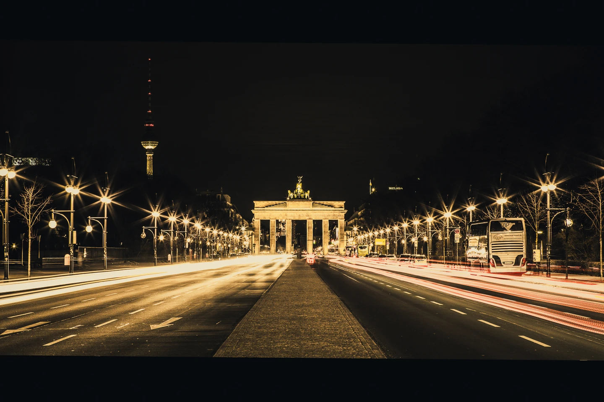

Located in southwest Germany, Heidelberg is considered to be one of the most magical destinations in all of Europe. A source of inspiration for some of the most famous poets, painters, philosophers and writers, Heidelberg was an important center for the German Romanticism of the 18th century. Walking around its cobblestoned roads is the best way to experience the idyllic atmosphere that inspired Mark Twain. The well-known writer spent a big part of his life in the city, where he managed to complete the book The Adventures of Huckleberry Finn. The internationally known University of Heidelberg, alongside its rich library, was the first to be built in Germany and today is ranked among the top universities in the world. The old historical Alte Brücke bridge connects the two sides of the river Neckar that runs through Heidelberg, and used to be the main entrance to the city. A two-kilometer path starts from Neunheim, the neighborhood of the old town, crosses Alte Brücke and ends on the other side of the river. Here you can enjoy a magnificent view of the city. This route is known as ‘The road of the philosophers’, a path said to have been walked, at least once, by every single philosopher and professor from the University of Heidelberg.
2. Freiburg: a sunlit porch in the south of Germany

There’s a riddle spoken about Freiburg and it goes like this: ‘Are the citizens of Freiburg so content because the sun shines above their city, more than in any other place in Germany; or have they been granted with the gift of abundant sunlight because of their kindness?’ Who knows? The sure thing is that a visit to Freiburg is always a wonderful experience, even on those rare occasions when the sun doesn’t shine. Freiburg is one of the oldest cities in Germany. It therefore carries a big historical and cultural past. The city is filled with cafes, breweries, and restaurants run by locals, where you can enjoy the traditional cuisine. The vibrant, historical city center manages to stand out thanks to the 116-meter-tall gothic tower of its cathedral. The cathedral’s square is also the largest in the city, and it is where the weekly market takes place. The farmer’s stands line the northern side while the merchant’s stalls line the southern. Last but not least, the city offers a huge variety of festivals, which take place all year round. The festival season starts in January with the Internationalen Kulturbörse and finishes in December with an extravagant Christmas market.
3. Hamburg: gateway to the world

Hamburg is the second largest city in Germany, and the third biggest port in Europe. Its story begins with the Roman era; luckily we can still admire a big part of its original architecture, as the city managed to preserve its historic value during the raids of World War II. Today, it is a rapidly developing hub that has attracted the greats of the naval and aerospace industry, as well as publishing and communication companies, making the world speak of the creative explosion of northern Germany. The City Hall (Rathaus), is the only palace of the city, a prestigious, neoclassical building, whose inner decoration reflects the pride of the middle class of the 19th century. Walking through the open-air market and the elegant alleyways around the City Hall you will come across the Binnenalster, the huge lake in the middle of the city that connects the port with the sea. The Miniature Museum of Hamburg is one of the most interesting and original museums the city has to offer. It hosts the most impressive model figure exhibition in Europe. Last stop on a night in Hamburg should be the renowned fish market, which takes place at the port and opens its doors in the early morning hours on Sunday. Indie bands entertain the public in the big storage room of the port, and you ideally will finish your night out with freshly cooked breakfast and live music.
4. Potsdam: a kingdom of palaces and gardens

Potsdam is the capital of the state of Brandenburg and is mostly famous for its historical heritage as the seat of the Prussians. The Prussian kings created a baroque dream, while their successors broadened the image of the city with neoclassical monuments. Since 1990, the cultural treasure of Potsdam, including the palaces of Sanssouci, Neuer Garten, Babelsberg, Glienicke and Pfaueninsel island, along with their palaces, have been recognized as UNESCO World Heritage sites. A tour in the historical center of Potsdam could begin at the Old Market, the main square of the city, where the church of St. Nikolai, the Lustgarten and the City Hall form an aristocratic complex. The neighboring Luisenplatzt square connects the baroque Brandenburger Strasse to the tree-lined entrance of Sanssouci Park and Palace. Friedrich the Great designed his summer palace himself and it is today a perfect example of rococo architecture. He used to retreat to its premises to escape his worries, hence the palace’s name: sans souci, without worry.
5. Cologne: the imposing beauty

Even if you are not a religious person and you have never felt impressed by the architecture of a church, the cathedral of Cologne will be the exception. No matter how many pictures of it you have already seen, or how prepared you are about what to expect, the first time you lay eyes on it, in its whole majesty, with its 157-meter-tall towers reaching for the clouds, you can’t help but stare in awe. It took more than 600 years for the church to be completed, and it can feel like that’s the time it takes for a visitor to walk its perimeter. The biggest Gothic church in northern Europe, it survived 14 different bombings during World War II, while the rest of the city was falling apart. The most enchanting fact of all: here is where the bones of the ‘Three Kings’ are kept – yes, those bearing the gifts for a newborn Jesus. The old town spreads around the cathedral to the west shores of the river Rhine. It is recommended for endless strolls in the narrow, cobblestoned alleyways, the petite squares, the impressive, vividly colored houses of the 19th century and the lively bars and restaurants that serve the fresh, local kölsch beer.
6. Kiel: the capital of sailing

Kiel is the capital of the Schleswig-Holstein state, and a key waterway from Germany to the Baltic. Its strategic position in the homonymous gulf allowed it to become the center of shipbuilding and navigation during the 19th century. Today, the city is known as the ‘Capital of Sailing’ as it is the proud host of the ‘Week of Kiel,’ the greatest sailing event in the world and the largest summer festival in northern Europe. The protagonist of the events is the ‘Gorch Fock,’ the legendary training ship and one of Kiel’s main attractions. The ‘Laboe Naval Memorial’ standing between Kiel and the neighboring town of Laboe is a magnificent dedication to sailors in the world wars. The view from the top is worthwhile, since the landscape of Kiel is relatively flat. Even though maritime tradition seems to dominate the stage, the city has much more to offer. This includes the historical Eggerstedtstrasse, which has undergone serious reconstruction after the war, the square of the ‘Old Market,’ the posh ‘Danish’ shopping street and the beautiful neighborhood of Marinenviertel next to the port. There, you can try Kiel’s local specialty, kieler sprotte, smoked fish that is meant to be eaten whole, until the last bone
7. Munich: the village of the world

Munich is the Bavarian capital built on the shores of Isar, the biggest tributary river of the Danube. The first inhabitants of the city were Benedictine monks, after whom the city is named. The Oktoberfest celebrations and the gigantic brezels are just stereotypes of the city. For some this is the least appealing side of it, as the prices rocket and more than three million tourists swarm the city looking for beer-tasting experiences. Munich is generally a quiet city with a history that goes back to the 12th century. Since then, it has managed to develop a multicultural personality and become a ‘village of the world,’ (Weltdorf for the locals) . Here the latest technology in automobiles and multi-ethnic corporations go hand in hand with the pervading history and Bavarian rustic style. It has wonderful parks and gardens, great museums and a big selection of cuisines and markets, varying from massive department stores to doll-like flea markets. Unfortunately, the historical center was badly damaged during the war, but it was reconstructed to be remarkably similar to the original. Characteristic examples are the Frauenkirche and the City Hall with the famous Glockenspiel, the clock with the statues that come to life on the mark of each hour.
8. Dresden: the treasure chest of Germany

The distribution of the country’s artistic treasures among the German cities wasn’t particularly fair, as Dresden seems to have gathered the majority of them. The capital of the free state of Saxony charms its visitors with a mixture of tradition and scenic landscapes. A walk in the dreamy city center, which used to be the seat of the rulers and kings of Saxony, reveals the beauty of Dresden, often characterized as the ‘Florence of Elbe’. The architectural style varies from Renaissance to baroque and neoclassical. The Frauenkirche, a pink and white church, the Zwinger Palace, and the Semperoper opera along with the city of gardens, Hellerau, are only some of the sights that demand attention. Picnics on the grass with a view of the palace and the cathedral, historical steamboats with Dixieland jazz music, castles that look onto the city from above and open-air breweries show that Dresden is not all about art. The river landscape creates a beautiful scenery for many open-air activities, like movie nights on the river bank, the open-air Elbhangfest festival and concerts in the romantic parks of the river castles.
9. Bremen: a Grimm tale

‘I tell you what,’ said the donkey, ‘I am going to Bremen, and shall be town-musician there. Go with me and engage yourself also as a musician. I will play the lute, and you shall beat the kettle-drum.’ A world-renowned fairytale of the Grimm Brothers takes place in Bremen and makes the street musicians the trademark of the city. Bremen is relatively small and easily explored, with the majority of the tourist attractions located in the Old Town. Approximately 2000 nails made of steel and copper mark the way from the Liebfrauen Kirche, the town’s oldest church, to the main square and further to Bottcherstrasse, once the street of craftsmen. The glorious City Hall with its Renaissance architecture still remains today the main landmark of the city, as well as a tribute to Roland, protector of the Trade and the city’s founder. Of course, here also stands the statue representing the Musicians of Bremen (a donkey, a dog, a cat and a rooster).
10. Berlin – the laid-back metropolis

The capital city of Germany is Berlin. Upon arrival, visitors have to forget anything they knew about a typical German city. Berlin is an assemblage of peoples and cultures, a historical and at the same time modern city. It also contains some of the finest examples of contemporary architecture. The story of a whole nation is captured in the landmarks of Berlin, from the grandiose Brandenburg Gate, to the 368-meter-tall TV tower at Alexanderplatz, offering one of the best views in the city. Also notable is the magnificent Bundestag, the German parliament with its glass dome, which is open to the public for free. Berlin creates the latest trends in lifestyle, music and art, attracting artists from all over the world and therefore, offering the largest independent music and theater scene in Europe. A night out in Berlin is a must, as the city nights are long throughout the week with a huge selection of cozy bars, clubs and live stages, especially around the areas of Kreuzberg and Neukölln. Don’t miss out on a walk around the East Side Gallery, the longest preserved part of the inner Berlin Wall, covered with current and old graffiti art.